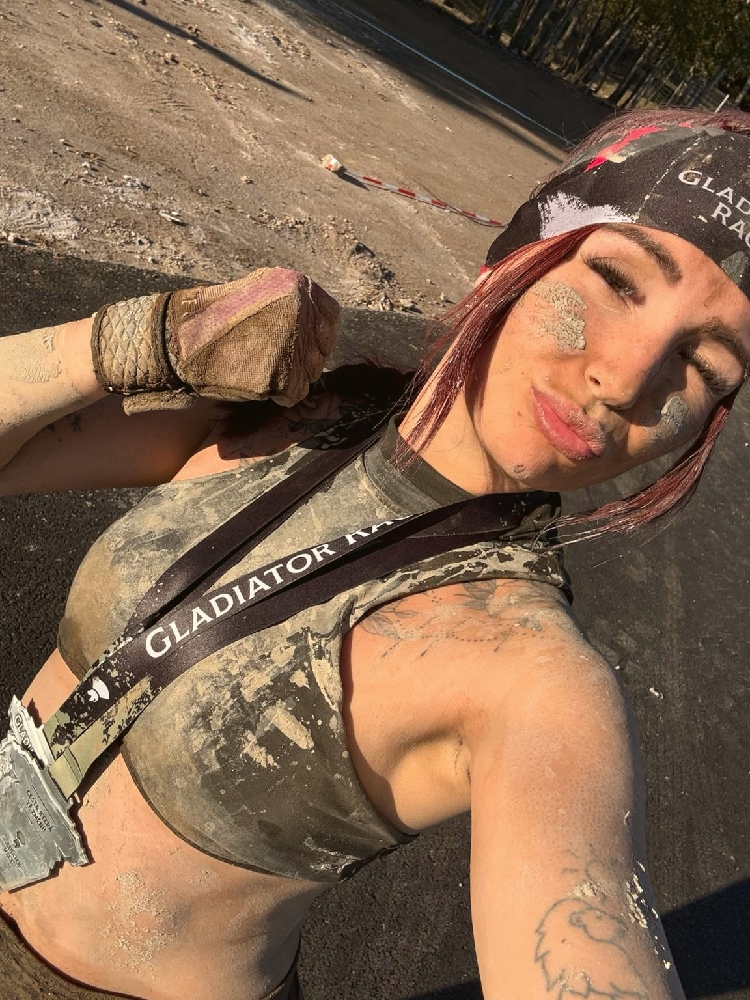

Desk jobChronic stressSports overloadFaster recovery
“Body and mind are connected vessels. That’s why I care for both.”
Is your back aching, your body struggling to recover and your mind unable to switch off? I bring together deep bodywork, nervous system regulation and mindful work with the mind. Eight years of practice have taught me that everyone needs care that is holistic and truly individual – not a one-size-fits-all routine.
Who am I?
My name is Ivana Soukupová
Massage therapist, accredited trainer and peer consultant in mental health
I started giving massages at 18. In eight years of one-to-one practice, I’ve worked with athletes, fighters and people facing life’s toughest challenges.
I’ve experienced first-hand what working with the body and the nervous system can do. It helped me recover even where doctors had given up hope. That experience now runs through everything I do.
Services
What are you looking for right now?
DepressionBipolar disorderAnxietyDisabilityBurnoutAuthenticitySelf-confidence
Recovery with a guide who rewrote her own story
Life crossroadsRelationshipsWork & directionRecurring patterns
Practical tarot with clear guidance
Expertise
Where did I gain my expertise and experience?
8 years
Of one-to-one practice
- Massage therapy
- Somatics
- Lifestyle coaching
- Tarot work
Education
- VŠTVS Palestra – three-year university programme specialising in sport and movement
- Certified therapeutic exercise instructor and fitness instructor (level II)
- Accredited training for peer consultants in mental health
Methods I use in my work
- Deep tissue
- Trigger point therapy
- Spinal mobilisation
- Post-isometric relaxation
- Myofascial release
- Dorn method
- Breuss massage
- Thai massage
- Kinesio taping
- Breathwork
- Pendulation
- Coaching
I never stop learning. I follow the latest research and do my own digging so I can offer clients the very best of what we know today about the body and the nervous system. Full list of courses →
My approach
An authentic approach to recovery and nervous system work
I know the path to recovery from the inside, not just from textbooks. My own experience gives me a depth no course can teach, and I combine it with my full professional toolkit. That’s why I see every client as a whole person: their body, their nervous system and the life they live.
About the Pure Well brand
To feel truly well
“Caring for your health isn’t an expense. It’s the best investment in your future.”
Pure Well was born from the belief that feeling good isn’t a luxury – it’s the standard. In your own body, your own mind and your own life. Whether you’re preparing for a race, recovering, or simply need to rest.

The Pure Well symbol
It’s never too late to begin
The human body has an incredible capacity to renew and adapt. And so does the mind. All it takes is the desire to discover your full potential.
Ginkgo biloba has grown on Earth for over 200 million years, making it one of the oldest trees in existence. In Hiroshima, several ginkgo trees survived the atomic blast of 1945, even though they stood just a kilometre or two from its centre. Soon afterwards they sprouted again – and they are still growing today.
Its leaf resembles the two hemispheres of the brain, and the name biloba means “two-lobed”: two halves growing from a single stem. That’s why, for me, the ginkgo symbolises the duality of body and mind as well as renewal – a reminder that even after the hardest times, we can grow again.
Booking
How to reach me
Most of my clients come through personal recommendations. Message me with the service you’re interested in and we’ll find a time. Not sure what would suit you best? We’ll talk it through together.
- Phone+420 603 338 839 · SMS, WhatsApp
- Instagram@ivana.panthera
- MassageEl Guapo Fight Academy
Na Rovnosti 2854/13A, Prague 3 - Mentoringpeer and tarot, live online